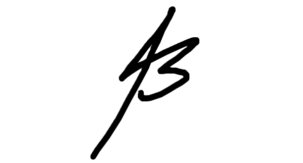

שם פרויקט: TACMESH
רשת קשר מבוזרת ומוצפנת לכוח קרקעי הפועל ללא תשתית תקשורת
במסגרת הפרויקט אבנה מערכת קשר לכוח קרקעי הפועל בשטח שאין בו תשתית תקשורת זמינה. המכשירים של אנשי הכוח מהווים בעצמם את הרשת. כל מכשיר הוא גם משתמש וגם נתב, והודעות עוברות ביניהם בקפיצות עד שהן מגיעות ליעדן.
לרשת מסוג זה קוראים רשת אד-הוק ניידת*. אין בה צומת מרכזי, אין בה תחנת בסיס, והקישוריות בין המכשירים משתנה כל הזמן ככל שהאנשים זזים בשטח. המערכת שאבנה מטפלת בשני קשיים שנובעים ישירות מהמבנה הזה, והם מסירת הודעות כאשר אין מסלול רציף בין השולח לנמען, וזיהוי מוקדם של הנקודות שבהן הרשת עלולה להיקרע לשניים.
מעבר לרשת עצמה, המערכת מחשבת מסלול פינוי לפצוע. החישוב נעשה על מפת שטח אמיתית ומשקלל שלושה גורמים, ולא רק את המרחק.
המערכת אחראית על:
תפקידי הצומת הבודד:
כוח קרקעי הפועל בשטח פתוח נשען היום על קשר קולי במכשירי קשר, ועל מערכות מודעות מצבית הדורשות תשתית או שרת מרכזי. בשני המקרים קיימת נקודת כשל אחת. אם התשתית אינה זמינה, בין אם בשל היעדרה באזור ובין אם בשל שיבוש מכוון, הכוח מאבד את היכולת להעביר מידע כתוב ומדויק.
הבעיה מחריפה כאשר הכוח מפוצל למספר צוותים שאינם רואים זה את זה. במצב כזה ייתכן שבין שני צוותים אין בשום רגע נתון מסלול רציף של מכשירים, ולכן הודעה שנשלחת הולכת לאיבוד. תחום המחקר שעוסק בבעיה הזו נקרא רשתות סובלות השהיות*, והרעיון המרכזי בו הוא שהודעה יכולה להמתין בזיכרון המכשיר ולהיות נישאת בתנועה הפיזית של האדם עד שנוצר מפגש.
קושי שני הוא שברשת מבוזרת אף צומת אינו רואה את התמונה המלאה. לוחם שנמצא בנקודה מסוימת עשוי להיות החוליה היחידה המחברת בין שני חלקי הכוח, ואיש אינו יודע זאת. כשהוא נופל או מתרחק, הניתוק מתגלה רק בדיעבד.
מטרת הפרויקט היא לבנות מערכת אחת שמטפלת בשני הקשיים, ומשתמשת בגרף התקשורת גם לצורך נוסף, תכנון מסלול פינוי לפצוע. הקשר בין שני החלקים אינו מקרי. מנוע חישוב קווי הראייה* הנדרש להערכת החשיפה לאיום הוא אותו מנוע המעריך אם שני מכשירים יוכלו לתקשר, משום שרכס שחוסם עין חוסם גם אנטנה.
הפרויקט נוגע בארבעה תחומים מרכזיים.
תחום רשתות מחשבים ותקשורת נתונים: אגדיר את הפרוטוקול שהצמתים מדברים בו מעל UDP. אקבע איך נראית הודעה שדה אחר שדה, איך צומת מגלה מי נמצא בטווח שלו, כמה קפיצות מותר להודעה לעבור לפני שהיא נזרקת, וכמה זמן היא נשמרת בזיכרון לפני שהיא נמחקת. בתחום זה אחקור גישות ניתוב לרשת סובלת השהיות* ואשווה ביניהן על אותם תרחישים, כאשר מדדי ההשוואה הם אחוז המסירה מול העומס שכל גישה מייצרת. בעיה נוספת בתחום היא קביעת סדר בין עדכונים שהגיעו במסלולים שונים, ללא שעון משותף.
תחום אבטחת מידע: כל הודעה במערכת תוצפן כך שרק הנמען יוכל לקרוא אותה, וצומת שמעביר אותה בדרך יראה רק את שדות הניתוב ולא את התוכן. אחקור בתחום זה ארבע בעיות: הגעה לסוד משותף בין שני צדדים שלא נפגשו מעולם וללא גורם מרכזי, הצפנת תוכן ההודעה בצורה שמגלה כל שינוי בה, אימות זהות השולח על כל הודעה ועל כל דיווח מיקום, וגלגול המפתח לאורך זמן כך שחשיפת מפתח אחד לא תחשוף את מה שנשלח לפניו ואחריו.
תחום מערכות הפעלה: בכל מחשב ירוצו שני processes נפרדים. אחד מציג את המסך למשתמש, והשני עושה את כל עבודת הרשת. תהליך המסך מפעיל את השני כ-child process, עוקב אחריו, ומפעיל אותו מחדש אם הוא נופל. בתוך תהליך הרשת ירוצו כמה threads במקביל: אחד מאזין ל-packets שמגיעים, אחד משדר את פעימת הנוכחות כל חמש שניות, ואחד מחשב מחדש את הגרף. שלושתם ניגשים לאותה רשימת שכנים, ולכן אשתמש ב-reader-writer lock שימנע race condition שבו שניים כותבים לרשימה באותו רגע ומשאירים אותה במצב לא עקבי.
תחום מבני נתונים ואלגוריתמים: שתי בעיות גרפים עומדות במרכז הפרויקט. הראשונה היא זיהוי בזמן אמת של הצמתים והקשרים שנפילתם מפצלת את הכוח לרכיבי קשירות* שאין ביניהם מעבר מידע. השנייה היא חישוב מסלול פינוי על משקל שאינו מרחק, אלא צירוף של זמן נסיעה, חשיפה לאיום ואיכות קשר, ובנוסף הצגת מספר חלופות מובחנות למפקד. זהו החלק הכבד ביותר בפרויקט מבחינת החשיבה האלגוריתמית, ולכן אקדיש לו את החלק הגדול ביותר מזמן הפיתוח.
המונחים המסומנים בכוכבית לאורך המסמך מוגדרים כאן. בגרסה הדיגיטלית לחיצה על הכוכבית מקפיצה ישירות אל ההגדרה.
למערכת שני חלקים, ורק אחד מהם רץ בשטח:
אין במערכת שרת, ואף יכולת אינה פונה לגורם מרכזי בזמן הפעילות. גם בתוך הרשת עצמה אין צומת מרכזי. כל מכשיר מחובר ישירות רק למי שנמצא בטווח שלו, ולכן הגרף* המתקבל דליל ומשתנה כל הזמן. קשתות נוצרות ונעלמות תוך שניות ככל שהאנשים זזים. המבנה הזה הוא שמייצר את האתגר האלגוריתמי, שכן אילו כל מכשיר היה מחובר לכל מכשיר אחר לא היה מה לנתב.
כל מחשב מריץ צומת מלא, המורכב משני תהליכים נפרדים:
בין שני התהליכים עובר ערוץ מקומי. הסוכן מאזין על כתובת ה-loopback של המחשב בלבד, כלומר 127.0.0.1, ועל port המוקצה דינמית בכל הפעלה ונמסר ל-main process.
העברת המידע מהסוכן אל הממשק נעשית ב-streaming ולא ב-polling. משמע החיבור נשאר פתוח, והסוכן דוחף עדכון ברגע שהגרף משתנה, במקום שהממשק ישאל אותו כל כמה שניות אם יש חדש. הסיבה אינה חיסכון בתעבורה. polling בקצב קבוע מוסיף השהיה בגודל מחזור התשאול בין רגע האירוע לבין הצגתו על המסך, וההשהיה הזו נכנסת ישירות לקריטריון זיהוי קריעת הרשת שהגדרתי.
ההאזנה על 127.0.0.1 ולא על כתובת חיצונית היא שיקול אבטחה ולא פרט טכני. מנת רשת שמגיעה מחוץ למחשב לעולם אינה מגיעה לכתובת הזו, ולכן הסוכן אינו חשוף לרשת. מה שכן חשוף הוא כל תהליך אחר שרץ על אותו מחשב, ובכלל זה דף אינטרנט פתוח בדפדפן, ולכן הערוץ מוגן גם ב-access token הנוצר מחדש בכל הפעלה.
במערכת ארבעה תפקידים. כל תפקיד רואה מסך אחר ומקבל הרשאות שונות. ההרשאות מצטברות, כך שכל תפקיד רואה את מה שרואה התפקיד שמתחתיו ובנוסף לו.
| תפקיד | הרשאות ותצוגה |
|---|---|
| לוחם | מפה, מיקומי הכוח, שליחה וקבלה של הודעות |
| חובש | כל האמור לעיל, ובנוסף פתיחת דיווח פצוע וקביעת דרגת הדחיפות |
| מפקד | כל האמור לעיל, ובנוסף מדדי בריאות הרשת, התרעת נקודות חיתוך, וצפייה בחלופות מסלול הפינוי ואישורן |
| מנהל | מפעיל את בונה חבילת המשימה לפני היציאה לשטח: מגדיר משתמשים ותפקידים, מנפיק מפתחות, ואורז את החבילה. אינו משתתף בפעילות בשטח |
כדי להמחיש כיצד המערכת פועלת בפועל, זהו הרצף שאדגים בסיום הפרויקט:
לכל בעיה בפרק זה מוצגים הקלט, הפלט והאילוץ שמקשה עליה, ולאחריהם האלגוריתמים הרלוונטיים לה והנימוק לרלוונטיות שלהם.
קלט: גרף G(t) = (V, E(t)) שקשתותיו נוצרות ונעלמות עם תנועת האנשים, הודעה בעלת שולח, יעד וזמן תפוגה, והידע המקומי שברשות הצומת ברגע ההחלטה. פלט: רצף החלטות ההעברה, מי מוסר למי ובאיזה מפגש.
האילוץ שמקשה: ייתכן שלא קיים אף רגע שבו יש מסלול רציף בין השולח לנמען, ולכן ההגדרה הקלאסית של מסלול בגרף סטטי אינה חלה. מה שעשוי להתקיים הוא מסלול על פני זמן, רצף קפיצות שבו כל קפיצה מתרחשת אחרי שקודמתה הסתיימה. ההחלטה מתקבלת מקומית, בלי ידיעת העתיד ובלי ידיעת הגרף המלא, וזיכרון הצומת סופי. שני מדדי האיכות מושכים לכיוונים מנוגדים: אחוז המסירה עולה ככל שמעבירים יותר, והעומס עולה איתו.
אלגוריתמים רלוונטיים. ניתוב בהצפה* (Epidemic) רלוונטי משום שהוא מגדיר את הגבול העליון של אחוז המסירה, ולכן הוא קו ייחוס שמולו נמדדת כל גישה אחרת. ניתוב הסתברותי לפי מפגשים* (PRoPHET) רלוונטי משום שהוא מכוון לאותו אחוז מסירה בעומס נמוך בהרבה. ניתוב המבוסס על ידע גלובלי או על לוח זמנים ידוע מראש אינו רלוונטי כאן, משום שאין במערכת גורם המחזיק ידע כזה.
בעיה נלווית: קביעת סדר בין עדכונים שהגיעו בשני מסלולים. שעון לוגי* (Lamport) רלוונטי משום שהוא מפיק סדר סיבתי בלי שעון משותף, וללא סדר כזה עדכון מיקום ישן עלול לדרוס עדכון חדש ממנו.
קלט: גרף לא מכוון המייצג את הקישוריות ברגע נתון. פלט: קבוצת נקודות החיתוך* וקבוצת הגשרים*, ולאחר קריעה גם חלוקת הצמתים לרכיבי קשירות*.
האילוץ שמקשה: הגרף משתנה בכל פעימת נוכחות, כלומר מספר פעמים בדקה, וההתרעה נדרשת לפני שהחוליה נופלת ולא אחריה. הגישה הישירה, הסרת כל צומת בתורו ובדיקת קשירות מחדש, מחזירה תשובה נכונה אך עלותה גדלה ריבועית עם גודל הכוח, ולכן היא אינה עומדת בדרישת זמן האמת.
אלגוריתמים רלוונטיים: אלגוריתמי סריקת עומק למציאת נקודות חיתוך וגשרים, ובראשם Tarjan. הם רלוונטיים משום שהם מפיקים את אותה תשובה במעבר יחיד על הגרף במקום במעבר לכל צומת, ומשום שאותו מעבר מייצר גם את חלוקת הצמתים לרכיבי קשירות, כך ששתי הדרישות נענות מסריקה אחת.
בעיה נלווית: רעש. ברשת דלילה כמעט כל צומת הוא נקודת חיתוך, ולכן התרעה גולמית על כל נקודת חיתוך חסרת ערך מעשי. נדרש מדד המצטלב עם אינדיקציה נוספת, כגון מגמת היחלשות של הקשר לאורך זמן.
שתי הבעיות הקודמות מניחות שקיים גרף שאפשר להריץ עליו אלגוריתם. במערכת מבוזרת ההנחה הזו אינה מובנת מאליה, ולכן זו בעיה בפני עצמה.
קלט, מנקודת המבט של צומת יחיד: רשימת שכניו הישירים, שאותה הוא יודע בוודאות, ורשומות של רשימות שכנים של צמתים אחרים שהגיעו אליו דרך הרשת, כל אחת עם מזהה בעליה, ערך שעון לוגי* וזמן. פלט: אומדן מקומי של גרף הרשת כולה, ולצדו מידה של טריות האומדן.
האילוץ שמקשה: אין במערכת שום גורם שמחזיק את הגרף האמיתי. כל צומת רואה בוודאות רק את הקשתות היוצאות ממנו, וכל שאר הגרף מגיע אליו כעדות ממקור שני שיצאה לדרך לפני פרק זמן לא ידוע. מכאן שלושה קשיים: הכרעה בין רשומות סותרות ללא שעון משותף, קשתות שאינן קיימות יותר שרשומה ישנה מעידה על קיומן, וחוסר היכולת להבחין בין צד שנעלם לבין צד שקיים אך העדות עליו אינה מגיעה.
ההשלכה על בעיה 2: אלגוריתם השבירות רץ על אומדן ולא על הגרף האמיתי. אומדן ישן מדי יפיק התרעת שווא, ואומדן שמרני מדי יחמיץ חוליה שנעשתה קריטית זה עתה.
אלגוריתמים רלוונטיים: הפצת מצב קישוריות* (Link-State), דעיכת קשת לפי גיל הרשומה שהעידה עליה, והכרעת סתירות לפי מונה גרסה. שלושתם רלוונטיים משום שכולם מקומיים ואינם דורשים הסכמה גלובלית, שהיא בלתי אפשרית ברשת שעשויה להיקרע באמצע תהליך ההסכמה.
קלט: גרף דרכים הנבנה על מפת הגבהים* של אזור התרחיש, נקודת החילוץ שממנה יוצא צוות הפינוי, מיקום הפצוע, רשימת דיווחי איום שלכל אחד רמת ודאות וחותמת זמן, ודרגת הדחיפות שקבע החובש. פלט: מסלול מנקודת החילוץ אל הפצוע וחזרה, ולצדו מספר חלופות מובחנות. בנוסף, דיווח איום הוא קלט אנושי ולא קריאת חיישן, ולכן תרומתו למשקל נגזרת גם מרמת הוודאות שלו ומגילו.
האילוץ שמקשה: משקל הקשת אינו מרחק אלא צירוף של זמן נסיעה, חשיפת הקטע לקווי ראייה* מנקודות האיום, וזמן שהייה ללא קשר. המקדם היחסי של כל גורם נגזר מדרגת הדחיפות, ולכן אותו גרף מייצר מסלולים שונים לקלטים שונים.
אלגוריתמים רלוונטיים: אלגוריתמי מסלול קצר ביותר במשקל לא שלילי, ובראשם Dijkstra, רלוונטיים משום ששלושת גורמי המשקל אי-שליליים מעצם הגדרתם. אלגוריתמי K המסלולים הקצרים ביותר ללא לולאות, כגון Yen's K-Shortest Paths, רלוונטיים לדרישת החלופות, משום שהם מייצרים מסלולים מובחנים ולא וריאציות זניחות של אותו מסלול.
קלט: מפת גבהים ושתי נקודות עליה. פלט: האם השטח ביניהן חוסם את קו הראייה*.
האילוץ שמקשה: הבדיקה עצמה פשוטה: עוברים לאורך הקו מנקודה א' לנקודה ב', ומשווים בכל תא את גובה השטח לגובה הקו. אלא שהמערכת נזקקת לה לשתי מטרות, השונות זו מזו בכמות הבדיקות:
זה מה שמקשה: אותה בעיה דורשת שני אלגוריתמים שונים.
אלגוריתמים רלוונטיים: אלגוריתמי מעקב קרן על רסטר, כגון Bresenham, רלוונטיים לבדיקת זוג נקודות בודד, משום שהם דוגמים את פרופיל הגובה לאורך הקו במספר צעדים פרופורציוני לאורכו. אלגוריתמי שדה ראייה* (Viewshed) רלוונטיים לחישוב החשיפה, משום שהם מנצלים את העובדה שתאים הנמצאים על אותה קרן חולקים חישוב.
קלט: זרם הודעות בין שני צמתים בערוץ שבו הודעות עלולות להגיע לא לפי סדר שליחתן, להגיע פעמיים, או לא להגיע בכלל. שני הצדדים מחזיקים מראש את המפתח הציבורי הקבוע זה של זה. פלט: מפתח הצפנה נפרד לכל הודעה.
האילוץ שמקשה: אין ערוץ אמין ואין לחיצת יד מקדימה בין שני משתמשי קצה, ולכן הם חייבים לגזור מפתח הודעה מן הכותרת הגלויה ומן המצב שברשותיהם בלבד כדי להגיע לסוד משותף בצורה מאובטחת. בנוסף, הודעה שאבדה או נפרצה על ידי גורם צד שלישי, אינה יכולה לשבור את הפענוח של היסטורית השיחות או את ההודעות שיבואו אחריה. נדרשות שלוש תכונות שאינן זהות: סודיות קדימה, התאוששות מחשיפה, ועמידות לשידור חוזר.
אלגוריתמים רלוונטיים: שרשרת גזירת מפתחות סימטרית* רלוונטית לסודיות קדימה, אך לא להתאוששות מחשיפה. גלגול מפתחות דו-צירי* (Double Ratchet) רלוונטי משום שמטפל במפורש בסודיות היסטורית הצ'אט, בהתאוששות מחשיפת מפתח להודעה ספציפית ובהגעה מחוץ לסדר. שידור חוזר אוטומטי של הודעה רלוונטי כאשר השולח לא קיבל סימן מהנמען על קבלת ההודעה בחלון זמן מסוים. אבני הבניין שעליהן נשענות המשפחות האלה הן הצפנה סימטרית מאומתת*, החלפת מפתחות על עקומה אליפטית* וחתימה דיגיטלית*.
למערכת שני מצבי הרצה, ושניהם חלק מהפרויקט: על מחשב יחיד כשכל צומת הוא תהליך נפרד, ועל חומרה נפרדת כשלכל צומת מכשיר משלו מעל רשת אלחוטית. ההחלטה ההנדסית המרכזית היא ששניהם חולקים מסלול קוד אחד ואותו קובץ הרצה, ולכן מה שנמדד הוא מה שרץ.
| מצב | צמתים | התעבורה | הקישוריות נקבעת על ידי |
|---|---|---|---|
| ריבוי תהליכים | 20 עד 40 על מחשב אחד | UDP על 127.0.0.1, port לכל צומת | מודל רדיו וירטואלי* |
| חומרה | ארבעה, מכשיר לכל צומת | UDP על ממשק הרשת האלחוטי | התפשטות פיזית אמיתית |
בשני המצבים כל צומת הוא process נפרד של TacMesh.Agent. במצב ריבוי התהליכים הוא מאזין על כתובת ה-loopback 127.0.0.1 עם port משלו, המוקצה דינמית בהפעלה, ובמצב החומרה על כתובת המכשיר ברשת. התקשורת היא UDP אמיתי על sockets אמיתיים בשני המקרים. אין במערכת מימוש תעבורה שני ואין ליבה שיודעת באיזה מצב היא פועלת.
הבעיה שנוצרת במצב ריבוי התהליכים היא שעל loopback כל התהליכים שכנים מושלמים זה של זה: אין איבוד מנות, ההשהיה היא עשיריות מילישנייה, וכל אחד יכול להגיע לכל אחד. רשת כזו אינה מייצגת דבר. הפתרון הוא מודל רדיו וירטואלי*, שכל צומת מריץ בעצמו לפני שהוא מוסר את המנה ל-socket. המודל מחזיק את המיקומים המדומים, ולכל יעד מכריע בשלושה שלבים: האם המרחק קטן מהטווח המרבי, האם קיים קו ראייה* ביניהם על מפת הגבהים, והאם המנה עוברת לפי הסתברות התלויה במרחק היחסי. מנה שעברה משודרת אחרי השהיה מוגרלת. מדומה כאן רק ההתפשטות האלחוטית. הרשת, הפרוטוקול והקוד אמיתיים.
מכאן נובע גם שהשידור אינו broadcast. פעימת הנוכחות נשלחת ב-unicast לרשימת היעדים שמודל הרדיו אישר באותו רגע, ולכן צומת שמעבר לרכס אינו מקבל אותה כלל. זו הסיבה שהגרף נשאר דליל אף שכל התהליכים יושבים על אותה כתובת.
על גבי זה פועל מסך מנהל התרחיש, המאפשר ליצור ולהרוג instances בזמן ריצה, להזיז צומת על המפה ולשנות את טווח הקשר. הריגת התהליך של חוליה מרכזית היא נפילת צומת אמיתית, וכל השאר מגלים אותה דרך היעדר פעימות. כל instance יכול לפתוח חלון ממשק משלו, ולכן אפשר להציג את אותה רשת מנקודת המבט של מספר תפקידים בו-זמנית.
אותו קוד בדיוק משמש גם לשחזור תרחיש שמור ללא ממשק גרפי, שהוא הדרך שבה מופקות המדידות.
במצב זה רצים ארבעה צמתים, כל אחד על מחשב Raspberry Pi 5 משלו תחת Linux על ARM64. הסוכן והממשק זהים לאלה שרצים על מחשב שולחני, משום ש-.NET ו-Electron נתמכים בסביבה הזו, ולכן לא נדרש קוד ייעודי לחומרה. שני הבדלים בלבד: ה-socket נפתח על ממשק הרשת האלחוטי ולא על ה-loopback, ומודל הרדיו הווירטואלי מכובה. הטווח, החסימה בשל שטח ואיבוד המנות נקבעים כאן על ידי ההתפשטות הפיזית ולא על ידי חישוב.
זהו המצב שמראה שהפרוטוקול, ההצפנה, גילוי השכנים והניתוב עובדים מול קשר אלחוטי אמיתי, על מכשירים בעלי מעבד חלש בהרבה ממחשב הפיתוח. הוא אינו מחליף את מצב ריבוי התהליכים, משום שארבעה מכשירים אינם מאפשרים לבחון רשת בגודל פלוגה ואינם מאפשרים לשחזר תרחיש פעמיים.
בארבעה מכשירים בחדר אחד כולם נמצאים בטווח זה של זה, ולכן מסירה רב-קפיצתית לא תיווצר מעצמה. כדי להדגים אותה אפעיל מסנן טופולוגיה: לכל צומת רשימת שכנים מותרים, ומנה שהגיעה מצומת שאינו ברשימה נדחית לפני העיבוד. המסנן פועל מעל הקשר האלחוטי האמיתי ואינו מחליף אותו, והוא מאפשר לייצר קריעת רשת מבוקרת מבלי להרחיק מכשירים פיזית.
זהו המצב שבו המערכת כולה רצה על מחשב אחד, ללא מכשירים נוספים. הוא אינו הרצה אוטומטית שמתרחשת מעצמה. המשתמש הוא שמגדיר את התרחיש ונוהג בו, והמערכת מציגה לו כיצד הרשת מגיבה.
מה שהמשתמש עושה במצב הזה:
מה שמאפשר את כל זה הוא מודל הרדיו הווירטואלי*, שכן ללא מנגנון שמגביל את הקישוריות כל הצמתים על אותו מחשב היו שכנים מושלמים. קיום קשר בין שני צמתים נקבע בשלושה שלבים. תחילה נבדק שהמרחק ביניהם קטן מהטווח המרבי, לאחר מכן נבדק אם קיים קו ראייה* ביניהם על מפת הגבהים*, ולבסוף המנה עוברת בהצלחה לפי הסתברות התלויה במרחק היחסי. זהו מודל מפושט במכוון, ואינו כולל עקיפה מעבר למכשולים, הדהודים או הפרעות הדדיות.
התרחיש שהמשתמש חיבר נשמר לקובץ, ובו הצמתים ותפקידיהם, מסלולי התנועה, נקודות האיום ונקודת החילוץ. מכאן שתי כניסות לאותו קוד. נגן מריץ את התרחיש מול המשתמש עם ממשק, והוא יכול להתערב בו באמצע. שחזר מריץ את אותו קובץ עשר פעמים ללא חלון, וכותב את התוצאות למסד תוצאות המדידה.
השחזור הוא מקור המספרים שבפרק המדידות של ספר הפרויקט, והוא גם מה שמאפשר להשוות על קלט זהה בין שתי גישות הניתוב שאבחן, ניתוב בהצפה* וניתוב הסתברותי לפי מפגשים*. מה שמשוחזר הוא התרחיש ולא הריצה: התהליכים, ה-sockets וההודעות אמיתיים, ולכן תזמון מערכת ההפעלה וסדר הגעת המנות אינם דטרמיניסטיים. משום כך התוצאה המדווחת היא ממוצע עשר החזרות ולצדו סטיית התקן.
לסביבה הזו יתרון שפריסה בשטח אינה יכולה לספק. כל צומת בונה לעצמו תמונה של הרשת מתוך רשימות השכנים שהוא מקבל, והתמונה הזו עלולה להיות ישנה או חלקית. בשטח אין דרך לדעת עד כמה היא שגויה, משום שאין מקום שבו הרשת האמיתית ידועה. בסימולציה יש מקום כזה: מנהל התרחיש קובע את מיקומו של כל צומת, ולכן אפשר לחשב ממנו אילו צמתים מחוברים בפועל, ולהשוות לכך את התמונה שבנה כל צומת. מנהל התרחיש הוא כלי של הסימולציה ואינו חלק מהרשת. הצמתים אינם מקבלים ממנו מידע על הגרף, אלא רק את המיקום שלהם.
| פרמטר | ערך | הערה |
|---|---|---|
| מספר צמתים | 20 עד 40 | סדר גודל של פלוגה |
| שטח התרחיש | כ-4 על 4 ק״מ | מפת גבהים אמיתית של אזור בישראל |
| רזולוציית מפת הגבהים | 30 מטר | מנתוני גובה ציבוריים פתוחים |
| טווח קשר מרבי | 150 עד 400 מטר | ניתן לשינוי בזמן ריצה |
| מהירות תנועה | 0 עד 6 קמ״ש | הליכה, עצירות ותנועה מהירה |
| קצב פעימת נוכחות | אחת ל-5 שניות | איזון בין זמן הזיהוי לבין העומס |
| חזרות בשחזור תרחיש | 10 | להפקת הממוצע וסטיית התקן |
| הקצאת כתובות | 127.0.0.1 | port דינמי נפרד לכל instance |
המגבלות הבאות מוצהרות מראש כחלק מהיושרה המקצועית של העבודה:
הסיכונים המרכזיים והתגובה המתוכננת לכל אחד מהם:
| סיכון | השפעה | תגובה מתוכננת |
|---|---|---|
| שגיאה במצב גלגול המפתחות מתגלה מאוחר | גבוהה | הפרוטוקול נבדק מול וקטורי בדיקה רשמיים מן היום הראשון, ובנוסף בבדיקת הלוך ושוב אוטומטית המגרילה סדר הגעה, הודעות כפולות והודעות חסרות |
| עיבוד מפת הגבהים מורכב מהצפוי | בינונית | רסטר החשיפה מחושב בבונה חבילת המשימה ואינו בדרך הקריטית של זמן הריצה. בדיקת קו ראייה בודדת נבדקת בנפרד מול חתכי גובה מחושבים ידנית |
| שילוב ה-main process עם תהליך הליבה מתעכב | בינונית | הליבה נבדקת דרך הסימולטור ללא ממשק גרפי, ולכן הממשק אינו חוסם התקדמות |
| ריצה של עשרות תהליכים מעוותת את מדידות הזמן | בינונית | המדידות נעשות בשחזור ללא ממשק גרפי, וכל תרחיש חוזר עשר פעמים עם דיווח סטיית תקן |
| התרחבות ההיקף במהלך הפיתוח | גבוהה | הנושאים שמחוץ להיקף מוגדרים במפורש בסעיף הפיתוחים העתידיים. כל שינוי מחייב החלטה מול המנחה |
להלן התהליכים העיקריים בתחומים שבכותרת:
הצומת מורכב משני processes הרצים על אותו מחשב. תהליך הסוכן הוא תהליך C# הנושא את כל ההיגיון של המערכת: ניתוב, המתנה ומסירה, הצפנה, מצב הגרף ואחסון מקומי. תהליך זה הוא שמתקשר ישירות עם צמתים אחרים ברשת, שומר את רשימת השכנים שבטווחו, מנתב הודעות מצומת אל צומת, נושא הודעות ממתינות ומצפין מקצה לקצה. ה-main process של Electron מפעיל אותו כ-child process, מעביר לו את פרטי החיבור, ועוקב אחר מצבו. אם הסוכן נופל, ה-main process מזהה זאת ומפעיל אותו מחדש. בסגירת החלון הוא סוגר גם את הסוכן, כדי שלא יישאר במערכת orphan process שממשיך לשדר לרשת.
מכיוון שכל צומת הוא תהליך עצמאי, אותו מנגנון משמש גם להרצת רשת שלמה על מחשב אחד. מסך מנהל התרחיש מפעיל ומסיים תהליכי סוכן לפי דרישה, ומחזיק לכל אחד מהם את מזהה התהליך ואת ה-port שהוקצה לו. סיום תהליך הוא נפילת צומת אמיתית מבחינת כל השאר, והם מגלים אותה מהיעדר פעימות ולא מהודעה מסודרת.
בתוך תהליך הסוכן פועלים מספר threads במקביל: אחד קולט packets מהרשת, אחד משדר את פעימות הנוכחות בקצב קבוע, אחד מחשב מחדש את הגרף בכל שינוי קישוריות, ואחד משרת את הערוץ המקומי מול הממשק. כולם ניגשים לאותם מבני נתונים, ובראשם רשימת השכנים וה-buffer של ההודעות הממתינות.
ללא synchronization על המבנים המשותפים ייווצר race condition, ורשימת השכנים תישאר במצב לא עקבי. במקומות שבהם פעולת הקריאה נפוצה הרבה יותר מפעולת הכתיבה, כמו רשימת השכנים הנקראת בכל חישוב מסלול ומתעדכנת רק בשינוי קישוריות, אשתמש ב-reader-writer lock שמתיר מספר קוראים במקביל וכותב יחיד.
mutex גורף אינו יעיל במקום כזה משום שהוא serialize, כלומר מסדר בתור, כל פעולה על המשאב, גם קריאה שאינה משנה דבר. התוצאה היא bottleneck: חישוב הגרף וחישוב המסלול ממתינים זה לזה אף ששניהם רק קוראים. נעילת קוראים וכותבים מתירה להם לרוץ יחד, ועוצרת רק כאשר מגיע עדכון קישוריות. המחיר הוא סיכון הרעבת הכותב, ולכן המימוש יעדיף כותב ממתין על פני קוראים חדשים שביקשו את הנעילה אחריו.
בסדר הנעילות אקפיד על סדר קבוע, כדי שלא ייווצר deadlock בין שני threads שנועלים את אותם שני מבנים בסדר הפוך.
צומת אינו יודע מראש מי נמצא בסביבתו. כל צומת משדר בקצב קבוע פעימת נוכחות חתומה, הכוללת את מזההו, את מפתחו הציבורי, את ערך השעון הלוגי* שלו ואת דיווח המיקום שלו. צומת הקולט פעימה מאמת את החתימה מול רשימת המפתחות שבחבילת המשימה, ומוסיף את השולח לרשימת שכניו. שכן שלא נשמעה ממנו פעימה במשך מספר מחזורים מוסר מהרשימה, והקשת המתאימה נמחקת מהגרף.
המנגנון הזה נותן לצומת את הקשתות היוצאות ממנו בלבד. הוא אינו נותן לו גרף.
כדי שצומת יוכל להריץ ניתוח שבירות הוא זקוק ליותר מרשימת שכניו. לכן כל צומת מפרסם ברשת רשומת קישוריות: רשימת שכניו הנוכחיים, חתומה במפתחו הפרטי, ונושאת את ערך השעון הלוגי* שלו כמונה גרסה ואת זמן היצירה. הרשומות מופצות באותו מנגנון המתנה ומסירה* המשמש להודעות רגילות, ולכן הן מגיעות גם לצמתים שאינם בטווח ישיר.
הגרף שכל צומת מחזיק הוא איחוד רשומות הקישוריות העדכניות ביותר שברשותו. זהו אומדן מקומי ולא עובדה: הוא עלול להיות ישן, והוא עלול להיות חלקי. אין במערכת מקום אחד שבו הגרף האמיתי קיים, וזו תוצאה ישירה של הוויתור על גורם מרכזי.
שלושה הליכים מטפלים באיכות האומדן. הכרעת סתירות: כששתי רשומות על אותו צומת מגיעות בשני מסלולים, גוברת זו שמונה הגרסה שלה גבוה יותר, ולא זו שהגיעה אחרונה. דעיכת קשת: לכל קשת באומדן נשמר גיל הרשומה שהעידה עליה, וקשת שגילה עבר סף נחשבת לא מהימנה ויוצאת מהחישוב. בלי זה האומדן היה מצטבר לקשתות שלא קיימות ומציג רשת מחוברת יותר ממה שהיא בפועל. סף טריות להתרעה: התרעה על נקודת חיתוך* מוצגת רק כאשר כל הקשתות שהשתתפו בהכרעה טריות מספיק.
ההתנהגות שנובעת מכך נכונה גם כאשר הרשת נקרעת. מרגע הקריעה, רשומות מן הצד השני מפסיקות להגיע, קשתותיהן דועכות ונושרות, וכל אי רואה בסופו של דבר רק את עצמו. המפקד רואה שהכוח מפוצל, ומי מאנשי הכוח נמצא מחוץ לקשר. מה שאף צומת אינו יכול לדעת הוא אם הצד השני קיים ואינו מצליח להעביר עדות, או שאינו קיים עוד.
כאשר משתמש שולח הודעה, הסוכן מצפין אותה, חותם עליה, ומכניס אותה ל-buffer ההודעות הממתינות. משם מתחיל תהליך רציף שרץ ברקע. בכל פעם שמתגלה שכן חדש, הסוכן עובר על ההודעות שב-buffer ובודק לגבי כל אחת אם כדאי להעביר אותה לשכן הזה. הבדיקה עצמה היא ההבדל בין שתי גישות הניתוב, ניתוב בהצפה* וניתוב הסתברותי לפי מפגשים*.
צומת המקבל הודעה שאינה מיועדת לו בודק תחילה את מזהה ההודעה מול רשימת המזהים שכבר ראה, וכך נמנעות כפילויות ולולאות. לאחר מכן הוא מגדיל את ה-hop count, ואם המונה עבר את המקסימום ההודעה נזרקת. אם לא, ההודעה נכנסת גם ל-buffer שלו והוא הופך לנושא נוסף שלה.
שלושה מנגנונים במערכת תלויים בזמן: תפוגת הודעות, סדר גלגול המפתחות, ומיזוג דיווחי מיקום לפי הכלל שהמאוחר גובר. בהיעדר קליטה לוויינית אין מקור זמן משותף, ושעוני המכשירים נסחפים זה מזה, ולכן שני צמתים עלולים לחלוק על סדר האירועים. הפתרון שלי הוא דו-שכבתי:
צומת נושא הודעות שטרם נמסרו, אך זיכרונו סופי. המדיניות שאגדיר:
| רכיב | מנגנון | תפקיד |
|---|---|---|
| החלפת מפתחות | דיפי-הלמן על עקומה אליפטית | יצירת סוד משותף בין שני צדדים מבלי להעביר אותו ברשת |
| גזירת מפתחות | פונקציית גזירה מבוססת hash | הפקת מפתחות נפרדים לכל הודעה מתוך הסוד המשותף |
| הצפנת תוכן | הצפנה סימטרית מאומתת, מפתח 256 סיביות | סודיות ושלמות בפעולה אחת. שינוי בטקסט המוצפן מזוהה ופענוחו נכשל |
| חתימה דיגיטלית | חתימה על עקומה אליפטית | אימות זהות השולח על כל הודעה ועל כל דיווח מיקום |
| גלגול מפתחות מתמשך | גלגול דו-צירי של מפתח זמני ושרשרת סימטרית | מפתח חדש לכל הודעה. חשיפת מפתח אינה חושפת את העבר |
המפתח הפרטי הקבוע של הצומת אינו מתגלגל ואינו משתנה. מה שמתגלגל הוא מפתחות זמניים. בכל הודעה מצרף השולח לכותרת הגלויה מפתח ציבורי זמני ומספר הודעה. הנמען לוקח את המפתח הזמני הזה ואת מפתחו הפרטי, מריץ ECDH, ומגיע בדיוק לאותו סוד משותף שהשולח הגיע אליו מן הצד שלו. מן הסוד הזה גוזרת פונקציית הגזירה שרשרת מפתחות, ומפתח ההודעה נגזר ממנה לפי מספר ההודעה.
מכאן שהנמען תמיד מסוגל לגזור את המפתח, משום שכל מה שהוא זקוק לו נמצא בכותרת הגלויה ובמפתח הפרטי שברשותו. מה שמייצר את הסודיות קדימה אינו קושי בגזירה אלא העובדה שהמפתח נמחק מיד לאחר השימוש בו, ולכן אינו ניתן לשחזור בדיעבד. הודעות שהגיעו שלא לפי הסדר מטופלות בשמירה זמנית של מפתחות שדולגו, עד שההודעות החסרות מגיעות או עד שחלף זמן התפוגה שלהן.
שאלת היסוד בכל מערכת מוצפנת היא כיצד שני צדדים שלא נפגשו מעולם מאמתים זה את מפתחו של זה. במערכת שאין בה גורם מרכזי אין למי לפנות בזמן אמת, ולכן נדרש פתרון אחר.
עוגן האמון הוא מפתח המשימה: זוג מפתחות על עקומה אליפטית שהמנהל מייצר פעם אחת בבונה חבילת המשימה. המפתח הפרטי חותם על תוכן החבילה ואינו עוזב את מחשב הבונה לעולם. המפתח הציבורי מוטמע בכל עותק של החבילה. כל צומת מאמת בעזרתו שרשימת המפתחות הציבוריים שברשותו אותנטית, ומכאן שכל מפתח ברשימה אמין. זהו התפקיד שממלא במערכות אחרות גורם אישורים מרכזי, והוא מועבר כאן לרגע אחד מבוקר לפני היציאה לשטח.
מכאן נובעות שתי תוצאות. הראשונה היא שכל צומת יכול לאמת כל צומת אחר ללא גישה לרשת. השנייה היא שלוחם יכול לשלוח הודעה ראשונה מוצפנת לנמען שלא נפגש עמו מעולם, ללא לחיצת יד מוקדמת.
החבילה היא חוזה, ולכן שדותיה מוגדרים פורמלית. הבונה מאמת את הסכמה ומסרב לחתום על חבילה שאינה עומדת בה.
| שדה | חובה | תוכן |
|---|---|---|
| מזהה משימה וגרסה | חובה | מזהה ייחודי ומספר גרסה. צומת דוחה הודעות מצומת הנושא גרסת חבילה אחרת |
| מפתח ציבורי של המשימה | חובה | עוגן האמון שכנגדו מאומתת החתימה על החבילה |
| רשימת משתמשים ותפקידים | חובה | לכל משתמש מזהה, שם, תפקיד ומפתח ציבורי. נדרש לפחות משתמש אחד בתפקיד מפקד |
| מפת גבהים של האזור | חובה | רסטר הגבהים שעליו נעשים חישובי קו הראייה ומסלול הפינוי |
| נקודת חילוץ | חובה | הקואורדינטה שממנה יוצא צוות הפינוי. ניתנת להזזה על ידי המפקד בזמן ריצה |
| חתימת המשימה | חובה | חתימה על כל השדות שלעיל, במפתח הפרטי של המשימה |
| נקודות איום ידועות | אופציונלי | רשימה שעשויה להיות ריקה. כל נקודה נושאת רמת ודאות וחותמת זמן |
| רסטר חשיפה מחושב | אופציונלי | שדה הראייה לכל נקודת איום, מחושב בבונה. בהיעדרו הוא מחושב בטעינה הראשונה |
| פרמטרי תרחיש | אופציונלי | טווח קשר, קצב פעימות ומסלולי תנועה מוגדרים מראש |
בטבלה מרוכזים האיומים שזיהיתי, המענה של המערכת לכל אחד מהם, והסטטוס שלו בפרויקט. האיומים המסומנים כמחוץ להיקף מתוארים כאן במכוון, כדי שיהיה ברור שההחלטה שלא לטפל בהם מודעת ומנומקת.
| איום | מענה | סטטוס |
|---|---|---|
| האזנה לתעבורה | הצפנה מקצה לקצה. צומת מעביר אינו יכול לקרוא את התוכן | מטופל |
| שינוי תוכן בדרך | הצפנה מאומתת. כל שינוי מזוהה וההודעה נדחית | מטופל |
| התחזות לגורם ידידותי | חתימה על כל הודעה ועל כל דיווח מיקום, מאומתת מול חבילת המשימה | מטופל |
| Replay attack, שידור חוזר של הודעה שהוקלטה | מונה שולח העולה מונוטונית, בתוך האזור החתום של ההודעה. הנמען שומר לכל שולח את הערך הגבוה שראה וחלון קבלה של 64 ערכים אחורה, לטיפול בהודעות שהגיעו שלא בסדר. הודעה שמונה שלה מתחת לחלון, או שכבר סומנה בו, נדחית | מטופל |
| חשיפת מפתח מכשיר | הגלגול מגן על העבר ועל העתיד הרחוק ולא על ההווה. תוקף שהשיג את המכשיר קורא את מצב הצופן הנוכחי, את ההודעות הממתינות ואת המפתח הפרטי הקבוע, ומפענח עד שלב הגלגול הבא. מכאן הסיווג החלקי | מטופל חלקית |
| מכשיר שנתפס בידי גורם עוין | המענה המקובל הוא מפתח קבוצתי המבוזר בין מספר מחזיקים | מחוץ להיקף |
| הצפת הרשת בידי צומת מורשה | מצריך מנגנון מוניטין ותיחום קצב | מחוץ להיקף |
| ניתוח תעבורה, מי מדבר עם מי | מצריך הסתרה של נתוני הניתוב עצמם ולא רק של התוכן | מחוץ להיקף |
במערכת שני ערוצי תקשורת נפרדים, ולכל אחד מהם פרוטוקול משלו.
התקשורת בין הצמתים מתבצעת מעל UDP. בחרתי בו ולא ב-TCP משום שברשת שבה הקישוריות נקטעת כל הזמן, ה-handshake וה-retransmission של TCP עובדים נגדי. הוא ינסה לשמור על connection לצומת שכבר יצא מהטווח, ויכשל אחרי timeout ארוך. UDP שולח packet בודד ואינו מתחייב על הגעתו, וזה בדיוק המודל שמתאים לפעימת נוכחות ולהודעה שממילא מנוהלת ב-buffer משלי.
את האמינות אני מספק בשכבה שמעל: מזהה ייחודי לכל הודעה, hop count, ACK, TTL ו-buffer של הודעות ממתינות.
כל השידורים הם unicast. פעימת הנוכחות אינה נשלחת ב-broadcast אלא ליעדים שמודל הרדיו הווירטואלי אישר באותו רגע, כלומר לצמתים שנמצאים בטווח ובקו ראייה. זו ההחלטה שגורמת לכך שהרשת נשארת דלילה גם כשכל הצמתים יושבים על אותה כתובת loopback, ובלעדיה כל צומת היה שכן של כולם.
במערכת שלושה סוגי מנות: פעימת נוכחות, רשומת קישוריות הנושאת את רשימת השכנים של צומת, והודעת משתמש. שלושתן נושאות את אותה כותרת ונבדלות בשדה הסוג ובתוכן המטען.
בין ה-main process של Electron לבין תהליך הסוכן עובר ערוץ על כתובת ה-loopback בלבד, 127.0.0.1. הסוכן מאזין על port המוקצה דינמית בכל הפעלה ומוסר אותו ל-main process. הערוץ מוגן ב-access token הנוצר מחדש בכל הפעלה, ומועבר לסוכן בעת הפעלתו.
הערוץ פועל בשני כיוונים. מהממשק אל הסוכן עוברות פקודות, כגון שליחת הודעה או פתיחת דיווח פצוע. מהסוכן אל הממשק עוברים עדכוני מצב בזרימה רציפה, כך שהמפה מתעדכנת ברגע שמשתנה משהו בגרף ולא בתשאול חוזר כל כמה שניות.
אין במערכת ערוץ שלישי. חבילת המשימה נטענת למכשיר לפני היציאה לשטח ואינה מתעדכנת דרך הרשת, ולכן אין צורך בפרוטוקול סנכרון מול גורם מרכזי. כאשר שני צמתים נפגשים ומחזיקים גרסאות שונות של אותו נתון, למשל שני דיווחי מיקום של אותו לוחם, חל הכלל שהמאוחר גובר. הקדימות נקבעת לפי השעון הלוגי* ולא לפי ה-wall clock, משום ששעוני המכשירים נסחפים זה מזה.
זהו מבנה ההודעה שאגדיר. השדות שלפני המטען גלויים לכל צומת מעביר, משום שהוא זקוק להם כדי לנתב. המטען עצמו קריא רק לנמען הסופי.
| שדה | גודל | תפקיד |
|---|---|---|
| גרסת פרוטוקול | בית אחד | מאפשר שינוי מבנה בעתיד ללא שבירת תאימות |
| סוג מנה | בית אחד | פעימת נוכחות, רשומת קישוריות, או הודעת משתמש |
| מזהה הודעה | 16 בתים | ייחודי גלובלית. משמש לזיהוי כפילויות ולמניעת לולאות |
| מזהה שולח | 16 בתים | הכותב המקורי ולא המעביר האחרון |
| מזהה יעד | 16 בתים | הנמען הסופי |
| מונה קפיצות (hop count) | בית אחד | גדל בכל העברה. הודעה שעברה את המקסימום נזרקת |
| שעון לוגי | 8 בתים | קובע קדימות בין עדכונים |
| זמן תפוגה (TTL) | 8 בתים | אחריו ההודעה נמחקת מכל buffer ברשת |
| דרגת דחיפות | בית אחד | קובעת את סדר המסירה ואת סדר הפינוי מה-buffer |
| מונה שולח | 8 בתים | עולה באחד בכל הודעה שהצומת יוצר. הנמען מחזיק לכל שולח את הערך הגבוה שראה וחלון של 64 ערכים אחורה. הודעה שמונה שלה מתחת לחלון או שכבר סומנה בו נדחית, וכך נחסם שידור חוזר של הודעה שהוקלטה |
| מטען מוצפן | משתנה | התוכן. קריא רק לנמען הסופי |
| חתימה | 64 בתים | חתימת השולח על כל השדות שלפניה |
הנושאים הבאים נבחנו ונמצאו רלוונטיים מקצועית, אך הוצאו מהיקף הפרויקט במכוון. הם מתועדים כאן עם מסלול טכני ראשוני, כדי שיהיה ברור שההחלטה נובעת משיקול היקף ולא מהיעדר היכרות עם התחום.
אשתמש ב-SQLite בכל המערכת. בחרתי בו משום שהוא קובץ יחיד שאינו דורש שרת ואינו דורש התקנה נפרדת על מחשב המשתמש, ולכן הוא מתאים בדיוק למכשיר שפועל מנותק. אין במערכת מסד נתונים מרכזי, ואף צומת אינו תלוי בגישה למסד של צומת אחר.
אותו מנוע משמש בשלושה מקומות נפרדים, ולכל אחד מהם קובץ וסכמה משלו.
המסד בצומת. נוצר בהתקנה ונשאר על המכשיר. זהו המסד היחיד שפעיל בשטח.
| טבלה | תוכן |
|---|---|
| הודעות ממתינות | מזהה, דרגת דחיפות, TTL, מספר עותקים שהועברו |
| מצב הצפנה | מצב גלגול המפתחות מול כל נמען, ומונה ההודעות לכל כיוון |
| מיקומים | הדיווח האחרון של כל צומת מוכר: קואורדינטות, מקור וחתימה |
| אירועי פצועים | מיקום, דרגת דחיפות, זמנים, והמסלול שנבחר |
| יומן מקומי | מזהי הודעות שעברו, זמנים ומספר קפיצות, ללא תוכן קריא |
המסד בבונה חבילת המשימה. רץ פעם אחת לפני היציאה לשטח ואינו מגיע לשדה.
| טבלה | תוכן |
|---|---|
| משתמשים | שם, מזהה אישי, password hash, מפתח ציבורי |
| תפקידים והרשאות | הגדרת ארבעת התפקידים, ההרשאות, והשיוך ביניהם |
| חבילות משימה | גרסה, אזור, רשימת המפתחות והחתימה על החבילה |
מסד תוצאות המדידה. מלווה את הסימולטור ומשמש להפקת פרק המדידות.
| טבלה | תוכן |
|---|---|
| שחזורי תרחיש | מזהה התרחיש, seed, אלגוריתם הניתוב, אחוז מסירה, זמן מסירה ממוצע ומספר ההעברות |
| 08/26 | 09/26 | 10/26 | 11/26 | 12/26 | 01/27 | 02/27 | 03/27 | 04/27 | |
|---|---|---|---|---|---|---|---|---|---|
| הכנת הצעת הפרויקט | V | ||||||||
| הגשת ההצעה | V | ||||||||
| תכנון | V | ||||||||
| כתיבה | V | V | V | V | V | ||||
| בדיקות | V | V | |||||||
| הפעלה והגשה | V |
שלב הכתיבה מחולק לחמישה חודשים, ולכל חודש תוצר מוגדר וסגור:
חודשי הבדיקות כוללים את חיבור תרחישי הבדיקה, את שחזורם החוזר לאיסוף המדידות, ואת כתיבת פרק המדידות של ספר הפרויקט. בסוף כל חודש נכתבים פרקי ספר הפרויקט המתאימים לתוצר של אותו חודש, כדי שכתיבת הספר לא תידחה לסופו של התהליך.
שם המנחה: גל בר און, שאול כהן
חתימה:

חתימה: